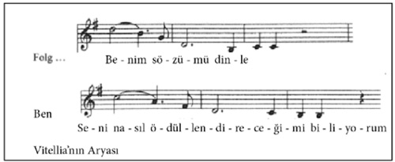
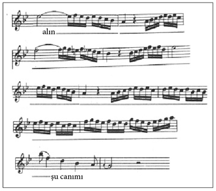

Titus (1791)
Antik Yunan’da çalkantılı günler yaşanmaktadır. 68-69 yıllarında dört hükümdar birden Roma İmparatorluğu’na hükmetmek için mücadele verir. Bunlardan biri Vitellius’tur. Ren ordusu askerleri tarafından imparator ilan edilir, Roma’yı ele geçirir ve aynı yıl aralık ayında öldürülür. Rakibi, doğudaki eyalet ordularının başkomutanı Vespasian askeri başarılar elde eder, kendi iktidarını güçlendirir, imparator olur ve hem iç hem dış siyasette Roma’yı geliştiren, güç merkezi haline getiren kişi olarak tanınır.
On yıl sonra çocukları birbirine girer. Vespasian’ın ölümünün ardından Vitellius’un kızı Vitellia taht üzerinde hak iddia eder, imparatoriçe ilan edilmek ya da en azından iktidara ortak olmak ister. Önündeki tek engel Vespasian’ın oğlu ve aynı zamanda Roma’yı yöneten vârisi Titus’tur. Vitellia, Titus’u öldürerek bu engeli ortadan kaldırmayı amaçlar.
Titus halkın her kesimi tarafından bilge, adil ve cömert bir imparator olarak takdir görmektedir. Bu durum, onu öldürecek bir katil bulmayı zorlaştırır. Vitellia, kendisi için yanıp tutuşan ve sözünden çıkmayan âşığını bu işte kullanacaktır. Daha operanın başında kıza açık çek verir: “İste! Emret! Yapayım!” Vitellia, Sesto’yu bu konuda konuşup durmaktansa Titus’u öldürmesi için kışkırtır. İşte Vitellia’nin onu nasıl kışkırttığına bir örnek. Titus’un tahtına göz diken kızı, elbette Mozart’ın gözünden göreceğiz.

Kız Sesto’yu tam üç kez doğrular: “Seni nasıl ödüllendireceğimi biliyorum!” Onu elbette aşkla ödüllendirecektir.
Arkadaşı Annius Sesto’yu ziyaret eder. Bu ziyaretin çok acil, özel bir nedeni vardır. Annius, Sesto’nun kız kardeşi Servilia ile evlenmek istemektedir. Kızın ağabeyinin onayını alır, şimdi bir de imparatorun onayını almalıdır. Bu işi Sesto halledecektir, imparatorun arkadaşı olduğu için fazla zorlanmayacaktır. Tahminleri doğrudur. Sesto, imparatorun arkadaşı, hatta dostudur. Aynı zamanda da kendisini imparatoru katletmesi için kışkırtan Vitellia’ya âşıktır. Sesto bu çıkmazda sıkışıp kalmıştır.
Kız isteğini her dile getirdiğinde harekete geçmek için hazırlansa da, Titus’la yüz yüze geldiğinde eli kolu bağlanır. Sesto bu gelgitlere daha fazla dayanamayacağının farkındadır. Kıza söylediği “Bir bakışın bile yüreğimin intikam ateşiyle yanmasına neden oluyor” sözleri ile içinden “Zavallı Sesto! Sen bir Hainsin! Rezil bir adamsın!” diye sayıklamaları arasında iyice yıpranmıştır.
Annius ve Servilia’nın evlenebilmeleri için imparatorun rızasını almak üzere yapılması planlanan görüşme hiç de yolunda gitmez. Sesto ve Annius geç kalmışlardır. İmparator –Sesto daha talebini dile getiremeden– evlilik kararı aldığını müjdeler. Müstakbel gelin Servilia’dır ve imparator gerekçesini gayet güzel açıklar: Kız, sağ kolu Sesto’nun kız kardeşidir (“Kanın imparatorluk kanıyla birleşmeli!”). Ayrıca halkın arzusu da bu yöndedir, onlar da Titus’un yanında eş olarak uzaklardan gelen Yahudi bir prensesi değil, bir Romalı görmeyi isterler. İmparatorun rızasını almaya gelen ikili yutkunarak susar. Büyük otoriteye boyun eğmekten başka çareleri yoktur. Planladıkları düğün hakkında tek kelime edemezler, aksine yüce hükümdarı onaylayıp icraatları karşısında saygıyla eğilirler. Ancak Servilia olaya açıklık getirir. “Kralın isteklerine karşı çıkmanın suç olduğunu biliyorum” dese de cesaretini toplayıp Titus’a, Annius’a duyduğu büyük aşktan bahseder. Ayrıca imparatorla evlense bile Annius’a duyduğu aşkın bitmeyeceğinden korktuğunu ifade eder. Titus’a bu şartlar altında eğer çok istiyorsa onunla evlenebileceğini söyler. Titus, Servilia ile evlenmekten vazgeçer.
Titus Servilia’ya teşekkür eder, “Neyse ki gerçeği söyleyecek cesareti bulan birileri var” der. Doğruluğu seven Titus, tıpkı Pompei felaketinde olduğu gibi her zaman güçsüzün ve mağdurun da yanındadır, hoşgörü ve cömertliği ilke olarak benimsemiştir, kendisi bunların yardımseverlik olduğunu söyler. Bu “iyilikler” ve gerçekler onun için en kutsal varlıklardır, Titus bunu elbette aryalarında da dile getirir:
Titus’un Seslendirdiği Arya: Vitellia’nın düşmanlığına maruz kalan ve sağ kolu Sesto tarafından ihanete uğrayan Titus, bunu kabul edemez, yaşadıkları üstün özelliklere sahip birini bile şaşkına çevirmeye yetmiştir. Titus tanrılara danışır, siyasi iktidarı sağlamak için bir tiran kadar gaddar mı olması gerektiğini sorar. Eğer öyleyse, tacını teslim edecektir ya da –işte burada üstün imparator artık kontrolünü kaybeder– tanrılardan kendisini öldürmelerini ister: “Alıınnnn şu canımı!” Mozart duruma müdahale ederek Titus’un tanrılara yönelttiği isteği “alııııın” sözcüğünü 36 sese yayıp (!) si2’ye kadar yükselterek çok daha güçlü kılar.

İkinci hamlede Mozart koloraturunu aynı sözcüğü –“alın”– söylerken seksen beş ses boyunca uzatır! Titus artık isyanlardadır, çaresizlik içindedir.
Titus kararını verir. Hayır, kendisini kandıranları, ihanet edenleri, arkasından iş çevirenleri sevindirmeyecektir. İlkelerine sadık kalacaktır. Zaferi, “Titus’un iyi niyeti” kazanmalıdır!
Vitellia, Sesto’nun başının etini yer: “Kapitol ateşe verildi mi? Tamamen kül olup gitti mi? Titus cezalandırıldı mı?” Sesto’nun yüzüne karşı hayatta gördüğü en korkak insan olduğunu söyler, ona tehditler ve hakaretler yağdırır. Sonunda Sesto, kadının istediklerini yapacağını söyleyerek çıkıp gider. Kısa bir süre sonra Kapitol yanmaya başlar, bir grup suikastçı da şehirde bir ayaklanma başlatır. İmparatorluk muhafızları komutanı, Vitellia’ya imparatorun kendisini beklediğini bildirir. İmparator, Vitellia’yı kendisine eş olarak seçmiştir. Vitellia şaşkına döner, imparatoru katletmekten alıkoymak için yakınlarda olduğunu düşündüğü Sesto’ya seslenir – artık çok geçtir.
Annius, içini kemiren suçluluk duygusuyla deliye dönen Sesto’yu bulur. Ona imparatorun hiç zarar görmediğini anlatır. Sesto o karmaşada komploculardan biri olan Lentulus’u Titus sanarak bıçaklamıştır (Lentulus hayattadır). Saklanmalıdır. Bu ihanetinden sonra artık Titus’un karşısına çıkmamalıdır. Bu arada Vitellia da gelir ve ona kaçmasını tavsiye eder, çünkü eğer Sesto yakalanırsa asıl suçlunun kendisi olduğu ortaya çıkacaktır: “Yoksa foyam ortaya çıkar.” Publius ve komutanı Sesto’yu yakalarlar. Kılıcını alırlar ve onu da götürürler. Senatonun karşısına çıkıp ifade verecektir. Suçunu itiraf eder, fakat Vitellia’yı ele vermez. Diğer komplocularla birlikte ölüme mahkûm edilir. İmparatorun kararı imzalaması halinde suçlular bir sonraki kutlamada aslanlara yem edilecektir.
Titus’un karar vermek için zamana ihtiyacı vardır. Sesto’nun suikast girişimi konusunda şüpheleri vardır. Ceza vermek ile affetmek arasında gidip gelir. Sesto’yu çağırtır ve onunla baş başa görüşmek ister. Ona sorular sorar, ancak Sesto suçu tek başına üstlenir ve ölüme gitmek istediğini belirtir. Titus ona imparatorun karşısında değil de bir dostunun karşısında olduğunu söylese de Sesto bu işte Vitellia’nın parmağı olduğunu itiraf etmez.
Titus senatonun verdiği kararı imzalar. Oysa fikren bunun tam aksini savunur. “Benim ilkelerim nerede kaldı? İnsanlar daha sonra ‘Titus merhametten yoruldu’ demeyecek mi?” der. İmzaladığı kâğıdı yırtar, ancak bunu duyurmaz, herkes cezalandırmanın daha önceden de planlandığı gibi amfitiyatroda gerçekleşeceğini zanneder.
Vitellia Sesto’nun gösterdiği sadakatten çok etkilenir. Bu kadar metanetli olacağını hiç hesaba katmamıştır. Kendi kendine “Sesto’yu kanlar içinde görmeye dayanabilecek miyim?” diye sorar. Kendisinin sözünden çıkmayan?.. Kendisine adeta tapan?.. Canı pahasına kendisini ele vermeyen?.. Vitellia sessizce imparatorun zifaf odasına girer. Orada Servilia ile konuşur. Servilia ona Titus’a gerçeği söylemesini öğütler. Vitellia onun öğüdüne uyar. Titus’un karşısına çıkarak tüm suçun kendisine ait olduğunu söyler. Suikastı kendisinin planladığını, Sesto’nun ise bunu sadece uyguladığını söyler. Titus burada tanrıların ve yıldızların yardımı olamayacağını hissetmiştir. Kendini toparlar ve tüm güçlere ayak diremek üzere “Faziletimi ... iyiliğimi kullanıyorum” der ve hainleri affederek serbest bırakır.